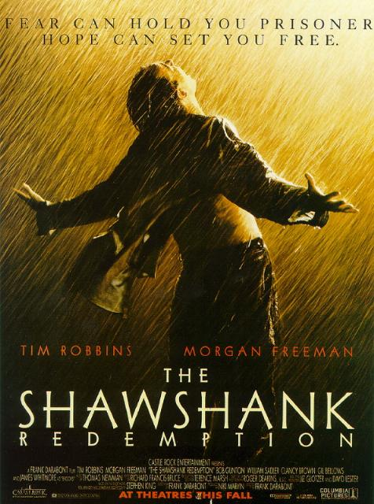

肖申克的救赎
剧情简介
银行家安迪被指控枪杀妻子及其情人，被判无期徒刑，送进肖申克监狱。在狱中，他凭借自己的金融学识赢得狱警的信任，也逐渐与囚犯瑞德结下深厚的友谊。面对高墙内的体制化生活，安迪始终没有放弃希望。他用一把小锤子和近二十年的坚持，在牢房墙壁上凿出了一条通往自由的道路，也完成了一场震撼人心的自我救赎。

银行家安迪被指控枪杀妻子及其情人，被判无期徒刑，送进肖申克监狱。在狱中，他凭借自己的金融学识赢得狱警的信任，也逐渐与囚犯瑞德结下深厚的友谊。面对高墙内的体制化生活，安迪始终没有放弃希望。他用一把小锤子和近二十年的坚持，在牢房墙壁上凿出了一条通往自由的道路，也完成了一场震撼人心的自我救赎。